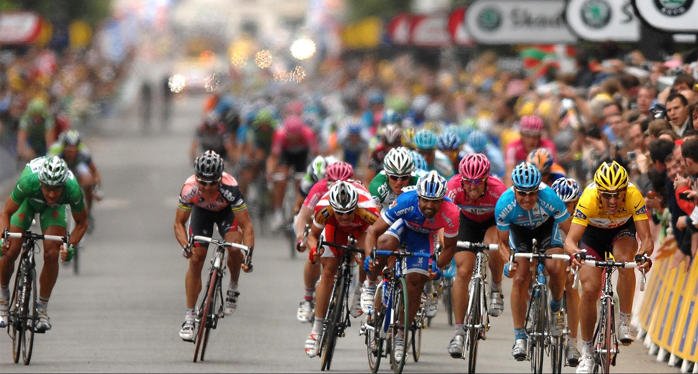

In this project I conducted a detailed analysis of bike share data over the past 12 months,
effectively presenting findings to cross-functional teams.
Then Utilized SQL to import, validate, and cleanse millions of data rows,
followed by implementing advanced analysis in R- studio to reveal trends and patterns.


I did a thorough data analysis on transmission rates over a specific period to explore the impact
of Covid-19 on various countries his involved collecting data on the transmission rates of Covid-19 in various countries over a
specific period of time.

Used a variety of statistical methods to build the predictive model. The model can predict the number of bike rentals at a given time and under certain weather conditions.
This model can be used to optimize bike rental timings by ensuring that there are enough bikes
available when demand is high.

This highlights my journey using Tableau, showcasing how I improved each project.